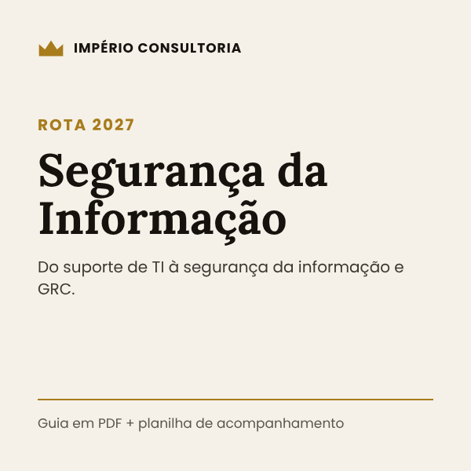

Protege sistemas e dados: monitora alertas, corrige vulnerabilidades, define controles e políticas, e responde a incidentes. Na trilha GRC, cuida de risco, conformidade (LGPD, ISO 27001) e auditorias. Esta rota organiza o caminho em 5 fases, de 9 a 15 meses, com uma entrega de portfólio em cada uma.
Para quem vem de: Suporte técnico, infraestrutura, redes, sistemas. Destino: Analista de segurança da informação / GRC.

Redes (TCP/IP, DNS, firewall), Linux e Windows Server, conceitos de identidade e acesso.
Entrega: Laboratório caseiro documentado (rede, servidor, firewall).
Ameaças, vulnerabilidades, criptografia, controles; preparação para a Security+.
Entrega: Relatório de vulnerabilidades do laboratório com correções.
Segurança em nuvem, logs, SIEM, resposta a incidentes (blue team).
Entrega: Painel de alertas e um playbook de incidente.
Gestão de riscos, ISO 27001, LGPD na prática, políticas e auditoria.
Entrega: Política de segurança e matriz de riscos de uma empresa fictícia.
Portfólio, LinkedIn, vagas de SOC júnior, analista de segurança ou GRC.
Entrega: 3 entregas no portfólio e 10 candidaturas por mês.
O que estudar em cada fase, recursos gratuitos para começar, certificações que ajudam no filtro de vagas e como chegar às entrevistas.
Progresso por fase, horas de estudo, portfólio, custos e candidaturas. Funciona no Excel e no Google Planilhas.
Os arquivos são liberados assim que o pagamento é confirmado.
Pagamento seguro pela Hotmart: Pix, boleto, cartão ou PayPal. O parcelamento tem juros da operadora.
Não. É um guia em PDF e uma planilha: um roteiro do que estudar, em que ordem e o que entregar em cada fase. Os cursos indicados no guia são gratuitos e oficiais.
Não. A rota organiza o caminho e as entregas que mostram o que você sabe fazer. Resultado depende da sua dedicação e do mercado.
Você tem 7 dias de garantia: pede o reembolso direto na Hotmart.